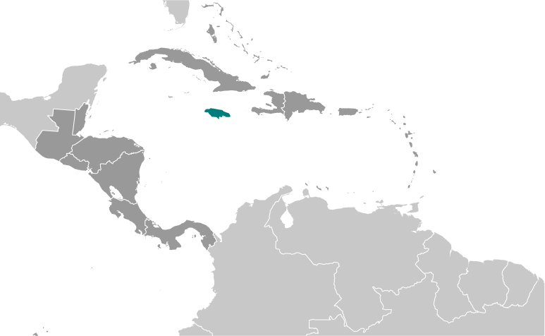
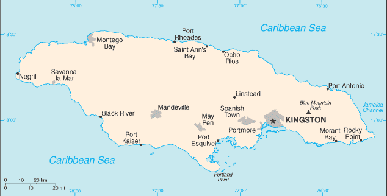
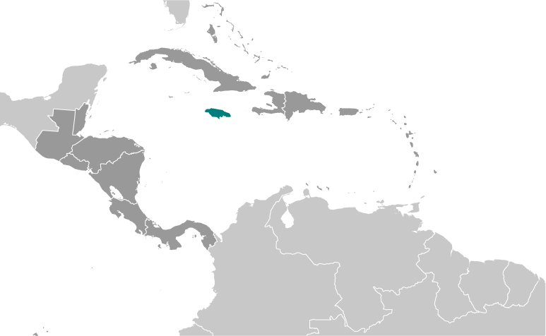
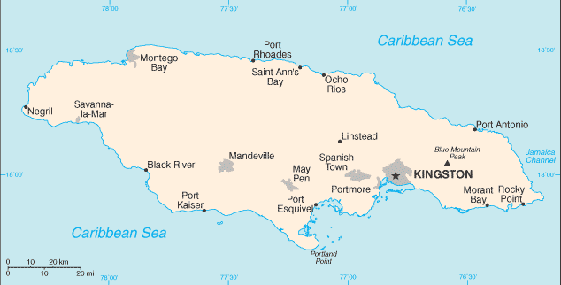

-
Introduction :: Jamaica
-
Background:The island - discovered by Christopher COLUMBUS in 1494 - was settled by the Spanish early in the 16th century. The native Taino, who had inhabited Jamaica for centuries, were gradually exterminated and replaced by African slaves. England seized the island in 1655 and established a plantation economy based on sugar, cocoa, and coffee. The abolition of slavery in 1834 freed a quarter million slaves, many of whom became small farmers. Jamaica gradually increased its independence from Britain. In 1958 it joined other British Caribbean colonies in forming the Federation of the West Indies. Jamaica withdrew from the Federation in 1961 and gained full independence in 1962. Deteriorating economic conditions during the 1970s led to recurrent violence as rival gangs affiliated with the major political parties evolved into powerful organized crime networks involved in international drug smuggling and money laundering. Violent crime, drug trafficking, and poverty pose significant challenges to the government today. Nonetheless, many rural and resort areas remain relatively safe and contribute substantially to the economy.JAMAICA SUMMARY: PDF
-
Geography :: Jamaica
-
Location:Caribbean, island in the Caribbean Sea, south of CubaGeographic coordinates:18 15 N, 77 30 WMap references:Central America and the CaribbeanArea:total: 10,991 sq kmland: 10,831 sq kmwater: 160 sq kmcountry comparison to the world: 167Area - comparative:about half the size of New Jersey; slightly smaller than ConnecticutLand boundaries:0 kmCoastline:1,022 kmMaritime claims:territorial sea: 12 nmexclusive economic zone: 200 nmcontiguous zone: 24 nmcontinental shelf: 200 nm or to edge of the continental marginmeasured from claimed archipelagic straight baselinesClimate:tropical; hot, humid; temperate interiorTerrain:mostly mountains, with narrow, discontinuous coastal plainElevation:mean elevation: 18 melevation extremes: 0 m lowest point: Caribbean Sea2256 highest point: Blue Mountain PeakNatural resources:bauxite, gypsum, limestoneLand use:agricultural land: 41.4% (2011 est.)arable land: 11.1% (2011 est.) / permanent crops: 9.2% (2011 est.) / permanent pasture: 21.1% (2011 est.)forest: 31.1% (2011 est.)other: 27.5% (2011 est.)Irrigated land:250 sq km (2012)Population distribution:population density is high throughout, but increases in and around Kingston, Montego Bay, and Port EsquivelNatural hazards:hurricanes (especially July to November)Environment - current issues:heavy rates of deforestation; coastal waters polluted by industrial waste, sewage, and oil spills; damage to coral reefs; air pollution in Kingston from vehicle emissions; land erosionEnvironment - international agreements:party to: Biodiversity, Climate Change, Climate Change-Kyoto Protocol, Desertification, Endangered Species, Hazardous Wastes, Law of the Sea, Marine Dumping, Marine Life Conservation, Ozone Layer Protection, Ship Pollution, Wetlandssigned, but not ratified: none of the selected agreementsGeography - note:third largest island in the Caribbean (after Cuba and Hispaniola); strategic location between Cayman Trench and Jamaica Channel, the main sea lanes for the Panama Canal
-
People and Society :: Jamaica
-
Population:2,812,090 (July 2018 est.)country comparison to the world: 139Nationality:noun: Jamaican(s)adjective: JamaicanEthnic groups:black 92.1%, mixed 6.1%, East Indian 0.8%, other 0.4%, unspecified 0.7% (2011 est.)Languages:English, English patoisReligions:Protestant 64.8% (includes Seventh Day Adventist 12.0%, Pentecostal 11.0%, Other Church of God 9.2%, New Testament Church of God 7.2%, Baptist 6.7%, Church of God in Jamaica 4.8%, Church of God of Prophecy 4.5%, Anglican 2.8%, United Church 2.1%, Methodist 1.6%, Revived 1.4%, Brethren 0.9%, and Moravian 0.7%), Roman Catholic 2.2%, Jehovah's Witness 1.9%, Rastafarian 1.1%, other 6.5%, none 21.3%, unspecified 2.3% (2011 est.)Age structure:0-14 years: 26.01% (male 372,158 /female 359,388)15-24 years: 18.36% (male 261,012 /female 255,223)25-54 years: 38.03% (male 518,984 /female 550,412)55-64 years: 8.89% (male 123,769 /female 126,350)65 years and over: 8.71% (male 115,573 /female 129,221) (2018 est.)population pyramid:
 The World Factbook Field Image ModalCentral America :: Jamaica Print
The World Factbook Field Image ModalCentral America :: Jamaica Print Image DescriptionThis is the population pyramid for Jamaica. A population pyramid illustrates the age and sex structure of a country's population and may provide insights about political and social stability, as well as economic development. The population is distributed along the horizontal axis, with males shown on the left and females on the right. The male and female populations are broken down into 5-year age groups represented as horizontal bars along the vertical axis, with the youngest age groups at the bottom and the oldest at the top. The shape of the population pyramid gradually evolves over time based on fertility, mortality, and international migration trends.
Image DescriptionThis is the population pyramid for Jamaica. A population pyramid illustrates the age and sex structure of a country's population and may provide insights about political and social stability, as well as economic development. The population is distributed along the horizontal axis, with males shown on the left and females on the right. The male and female populations are broken down into 5-year age groups represented as horizontal bars along the vertical axis, with the youngest age groups at the bottom and the oldest at the top. The shape of the population pyramid gradually evolves over time based on fertility, mortality, and international migration trends.
For additional information, please see the entry for Population pyramid on the Definitions and Notes page under the References tab.Dependency ratios:total dependency ratio: 48.7 (2015 est.)youth dependency ratio: 34.9 (2015 est.)elderly dependency ratio: 13.8 (2015 est.)potential support ratio: 7.2 (2015 est.)Median age:total: 28.6 yearsmale: 27.8 yearsfemale: 29.3 years (2018 est.)country comparison to the world: 133Population growth rate:-0.05% (2018 est.)country comparison to the world: 201Birth rate:16.5 births/1,000 population (2018 est.)country comparison to the world: 110Death rate:7.6 deaths/1,000 population (2018 est.)country comparison to the world: 104Net migration rate:-4.3 migrant(s)/1,000 population (2017 est.)country comparison to the world: 184Population distribution:population density is high throughout, but increases in and around Kingston, Montego Bay, and Port EsquivelUrbanization:urban population: 55.7% of total population (2018)rate of urbanization: 0.82% annual rate of change (2015-20 est.)Major urban areas - population:589,000 KINGSTON (capital) (2018)Sex ratio:at birth: 1.05 male(s)/female (2017 est.)0-14 years: 1.04 male(s)/female (2017 est.)15-24 years: 1.01 male(s)/female (2017 est.)25-54 years: 0.98 male(s)/female (2017 est.)55-64 years: 0.93 male(s)/female (2017 est.)65 years and over: 0.81 male(s)/female (2017 est.)total population: 0.98 male(s)/female (2017 est.)Mother's mean age at first birth:21.2 years (2008 est.)note: median age at first birth among women 25-29
Maternal mortality rate:89 deaths/100,000 live births (2015 est.)country comparison to the world: 77Infant mortality rate:total: 12.4 deaths/1,000 live births (2018 est.)male: 13.9 deaths/1,000 live births (2018 est.)female: 10.8 deaths/1,000 live births (2018 est.)country comparison to the world: 108Life expectancy at birth:total population: 74.5 years (2018 est.)male: 72.7 years (2018 est.)female: 76.5 years (2018 est.)country comparison to the world: 123Total fertility rate:2.09 children born/woman (2018 est.)country comparison to the world: 102Contraceptive prevalence rate:72.5% (2008/09)Health expenditures:5.4% of GDP (2014)country comparison to the world: 130Physicians density:0.47 physicians/1,000 population (2016)Hospital bed density:1.7 beds/1,000 population (2013)Drinking water source:improved: urban: 97.5% of populationrural: 89.4% of populationtotal: 93.8% of populationunimproved: urban: 2.5% of populationrural: 10.6% of populationtotal: 6.2% of population (2015 est.)Sanitation facility access:improved: urban: 79.9% of population (2015 est.)rural: 84.1% of population (2015 est.)total: 81.8% of population (2015 est.)unimproved: urban: 20.1% of population (2015 est.)rural: 15.9% of population (2015 est.)total: 18.2% of population (2015 est.)HIV/AIDS - adult prevalence rate:1.8% (2017 est.)country comparison to the world: 28HIV/AIDS - people living with HIV/AIDS:34,000 (2017 est.)country comparison to the world: 70HIV/AIDS - deaths:1,500 (2017 est.)country comparison to the world: 58Major infectious diseases:note: active local transmission of Zika virus by Aedes species mosquitoes has been identified in this country (as of August 2016); it poses an important risk (a large number of cases possible) among US citizens if bitten by an infective mosquito; other less common ways to get Zika are through sex, via blood transfusion, or during pregnancy, in which the pregnant woman passes Zika virus to her fetus
Obesity - adult prevalence rate:24.7% (2016)country comparison to the world: 55Children under the age of 5 years underweight:2.3% (2014)country comparison to the world: 108Education expenditures:5.4% of GDP (2017)country comparison to the world: 56Literacy:definition: age 15 and over has ever attended school (2015 est.)total population: 88.7% (2015 est.)male: 84% (2015 est.)female: 93.1% (2015 est.)Unemployment, youth ages 15-24:total: 28.3% (2017 est.)male: 23.2% (2017 est.)female: 34.4% (2017 est.)country comparison to the world: 40 -
Government :: Jamaica
-
Country name:conventional long form: noneconventional short form: Jamaicaetymology: from the native Taino word "haymaca" meaning "Land of Wood and Water" or possibly "Land of Springs"Government type:parliamentary democracy (Parliament) under a constitutional monarchy; a Commonwealth realmCapital:name: Kingstongeographic coordinates: 18 00 N, 76 48 Wtime difference: UTC-5 (same time as Washington, DC, during Standard Time)Administrative divisions:14 parishes; Clarendon, Hanover, Kingston, Manchester, Portland, Saint Andrew, Saint Ann, Saint Catherine, Saint Elizabeth, Saint James, Saint Mary, Saint Thomas, Trelawny, Westmoreland
note: for local government purposes, Kingston and Saint Andrew were amalgamated in 1923 into the present single corporate body known as the Kingston and Saint Andrew Corporation
Independence:6 August 1962 (from the UK)National holiday:Independence Day, 6 August (1962)Constitution:history: several previous (preindependence); latest drafted 1961-62, submitted to British Parliament 24 July 1962, entered into force 6 August 1962 (at independence) (2018)amendments: proposed by Parliament; passage of amendments to "non-entrenched" constitutional sections such as lowering the voting age, requires majority vote by the Parliament membership; passage of amendments to "entrenched" sections such as fundamental rights and freedoms requires two-thirds majority vote of Parliament; passage of amendments to "specially entrenched" sections such as the dissolution of Parliament or the executive authority of the monarch requires two-thirds approval by Parliament and approval in a referendum; amended many times, last in 2017 (2018)Legal system:common law system based on the English modelInternational law organization participation:has not submitted an ICJ jurisdiction declaration; non-party state to the ICCtCitizenship:citizenship by birth: yescitizenship by descent only: yesdual citizenship recognized: yesresidency requirement for naturalization: 4 out of the previous 5 yearsSuffrage:18 years of age; universalJudicial branch:highest courts: Court of Appeal (consists of president of the court and a minimum of 4 judges); Supreme Court (40 judges organized in specialized divisions); note - appeals beyond Jamaica's highest courts are referred to the Judicial Committee of the Privy Council (in London) rather than to the Caribbean Court of Justice (the appellate court implemented for member states of the Caribbean Community)judge selection and term of office: chief justice of the Supreme Court and president of the Court of Appeal appointed by the governor-general on the advice of the prime minister; other judges of both courts appointed by the governor-general on the advice of the Judicial Service Commission; judges of both courts serve till age 70subordinate courts: resident magistrate courts, district courts, and petty sessions courtsExecutive branch:chief of state: Queen ELIZABETH II (since 6 February 1952); represented by Governor General Dr. Patrick L. ALLEN (since 26 February 2009)head of government: Prime Minister Andrew HOLNESS (since 3 March 2016)cabinet: Cabinet appointed by the governor general on the advice of the prime ministerelections/appointments: the monarchy is hereditary; governor general appointed by the monarch on the recommendation of the prime minister; following legislative elections, the leader of the majority party or majority coalition in the House of Representatives is appointed prime minister by the governor generalLegislative branch:description: bicameral Parliament consists of:
Senate (21 seats; members appointed by the governor general on the recommendation of the prime minister and the opposition party leader, 13 seats allocated to the ruling party, and 8 seats allocated to the opposition party; members serve 5-year terms)
House of Representatives (63 seats; members directly elected in single-seat constituencies by simple majority vote to serve 5-year terms)elections:
House of Representatives - last held on 25 February 2016; byelection for 3 seats and 1 seat held on 30 October 2017 and 5 March 2018, respectively (next to be held no later than February 2021)election results:
percent of vote by party - JLP 50.1%, PNP 49.7%, other 0.2%; seats by party - JLP 32, PNP 31Political parties and leaders:Jamaica Labor Party or JLP [Andrew HOLNESS]
People's National Party or PNP [Dr. Peter David PHILLIPS]
National Democratic Movement or NDM [Peter TOWNSEND]International organization participation:ACP, AOSIS, C, Caricom, CDB, CELAC, FAO, G-15, G-77, IADB, IAEA, IBRD, ICAO, ICC (NGOs), ICRM, IDA, IFAD, IFC, IFRCS, IHO, ILO, IMF, IMO, Interpol, IOC, IOM, ISO, ITSO, ITU, LAES, MIGA, NAM, OAS, OPANAL, OPCW, Petrocaribe, UN, UNCTAD, UNESCO, UNIDO, UNITAR, UNWTO, UPU, WCO, WFTU (NGOs), WHO, WIPO, WMO, WTODiplomatic representation in the US:chief of mission: Ambassador Audrey Patrice MARKS (since 18 January 2017) (2017)chancery: 1520 New Hampshire Avenue NW, Washington, DC 20036telephone: [1] (202) 452-0660FAX: [1] (202) 452-0036consulate(s) general: Miami, New Yorkconsulate(s): Atlanta, Boston, Chicago, Concord (MA), Houston, Los Angeles, Philadelphia, Richmond (VA), San Francisco, Seattle (2017)Diplomatic representation from the US:chief of mission: Ambassador (vacant); Charge d'Affaires Eric KHANT (since 30 June 2017)embassy: 142 Old Hope Road, Kingston 6mailing address: P.O. Box 541, Kingston 5telephone: [1] (876) 702-6000 (2018)FAX: [1] (876) 702-6001 (2018)Flag description:diagonal yellow cross divides the flag into four triangles - green (top and bottom) and black (hoist side and fly side); green represents hope, vegetation, and agriculture, black reflects hardships overcome and to be faced, and yellow recalls golden sunshine and the island's natural resourcesNational symbol(s):green-and-black streamertail (bird), Guaiacum officinale (Guaiacwood); national colors: green, yellow, blackNational anthem:name: Jamaica, Land We Lovelyrics/music: Hugh Braham SHERLOCK/Robert Charles LIGHTBOURNEnote: adopted 1962
-
Economy :: Jamaica
-
Economy - overview:
The Jamaican economy is heavily dependent on services, which accounts for more than 70% of GDP. The country derives most of its foreign exchange from tourism, remittances, and bauxite/alumina. Earnings from remittances and tourism each account for 14% and 20% of GDP, while bauxite/alumina exports have declined to less than 5% of GDP.
Jamaica's economy has grown on average less than 1% a year for the last three decades and many impediments remain to growth: a bloated public sector which crowds out spending on important projects; high crime and corruption; red-tape; and a high debt-to-GDP ratio. Jamaica, however, has made steady progress in reducing its debt-to-GDP ratio from a high of almost 150% in 2012 to less than 110% in 2017, in close collaboration with the International Monetary Fund (IMF). The current IMF Stand-By Agreement requires Jamaica to produce an annual primary surplus of 7%, in an attempt to reduce its debt burden below 60% by 2025.
Economic growth reached 1.6% in 2016, but declined to 0.9% in 2017 after intense rainfall, demonstrating the vulnerability of the economy to weather-related events. The HOLNESS administration therefore faces the difficult prospect of maintaining fiscal discipline to reduce the debt load while simultaneously implementing growth inducing policies and attacking a serious crime problem. High unemployment exacerbates the crime problem, including gang violence fueled by advanced fee fraud (lottery scamming) and the drug trade.
GDP (purchasing power parity):$26.06 billion (2017 est.)$25.89 billion (2016 est.)$25.51 billion (2015 est.)note: data are in 2017 dollars
country comparison to the world: 140GDP (official exchange rate):$14.77 billion (2017 est.) (2017 est.)GDP - real growth rate:0.7% (2017 est.)1.5% (2016 est.)0.9% (2015 est.)country comparison to the world: 189GDP - per capita (PPP):$9,200 (2017 est.)$9,200 (2016 est.)$9,100 (2015 est.)note: data are in 2017 dollars
country comparison to the world: 143Gross national saving:18.3% of GDP (2017 est.)20.6% of GDP (2016 est.)18% of GDP (2015 est.)country comparison to the world: 109GDP - composition, by end use:household consumption: 81.9% (2017 est.)government consumption: 13.7% (2017 est.)investment in fixed capital: 21.3% (2017 est.)investment in inventories: 0.1% (2017 est.)exports of goods and services: 30.1% (2017 est.)imports of goods and services: -47.1% (2017 est.)GDP - composition, by sector of origin:agriculture: 7% (2017 est.)industry: 21.1% (2017 est.)services: 71.9% (2017 est.)Agriculture - products:sugar cane, bananas, coffee, citrus, yams, ackees, vegetables; poultry, goats, milk; shellfishIndustries:agriculture, mining, manufacture, construction, financial and insurance services, tourism, telecommunicationsIndustrial production growth rate:0.9% (2017 est.)country comparison to the world: 162Labor force:1.348 million (2017 est.)country comparison to the world: 135Labor force - by occupation:agriculture: 16.1%industry: 16%services: 67.9% (2017)Unemployment rate:12.2% (2017 est.)12.8% (2016 est.)country comparison to the world: 162Population below poverty line:17.1% (2016 est.)Distribution of family income - Gini index:35 (2016)38 (2015)country comparison to the world: 97Budget:revenues: 4.382 billion (2017 est.)expenditures: 4.314 billion (2017 est.)Taxes and other revenues:29.7% (of GDP) (2017 est.)country comparison to the world: 81Budget surplus (+) or deficit (-):0.5% (of GDP) (2017 est.)country comparison to the world: 37Public debt:101% of GDP (2017 est.)113.6% of GDP (2016 est.)country comparison to the world: 16Fiscal year:1 April - 31 MarchInflation rate (consumer prices):4.4% (2017 est.)2.3% (2016 est.)country comparison to the world: 166Central bank discount rate:3.25% (31 December 2017)3% (31 December 2016)country comparison to the world: 105Commercial bank prime lending rate:14.91% (31 December 2017 est.)16.49% (31 December 2016 est.)country comparison to the world: 41Stock of narrow money:$3.55 billion (31 December 2017 est.)$3.427 billion (31 December 2016 est.)country comparison to the world: 115Stock of broad money:$3.55 billion (31 December 2017 est.)$3.427 billion (31 December 2016 est.)country comparison to the world: 121Stock of domestic credit:$7.326 billion (31 December 2017 est.)$7.382 billion (31 December 2016 est.)country comparison to the world: 118Current account balance:-$679 million (2017 est.)-$381 million (2016 est.)country comparison to the world: 126Exports:$1.296 billion (2017 est.)$1.195 billion (2016 est.)country comparison to the world: 151Exports - partners:US 39.1%, Netherlands 12.3%, Canada 8.4% (2017)Exports - commodities:alumina, bauxite, chemicals, coffee, mineral fuels, waste and scrap metals, sugar, yamsImports:$5.151 billion (2017 est.)$4.169 billion (2016 est.)country comparison to the world: 126Imports - commodities:food and other consumer goods, industrial supplies, fuel, parts and accessories of capital goods, machinery and transport equipment, construction materialsImports - partners:US 40.6%, Colombia 6.8%, Japan 5.8%, China 5.8%, Trinidad and Tobago 4.7% (2017)Reserves of foreign exchange and gold:$3.781 billion (31 December 2017 est.)$2.719 billion (31 December 2016 est.)country comparison to the world: 100Debt - external:$14.94 billion (31 December 2017 est.)$10.24 billion (31 December 2016 est.)country comparison to the world: 103Stock of direct foreign investment - at home:$15.03 billion (2016)$10.86 billion (2010)country comparison to the world: 90Stock of direct foreign investment - abroad:$604 million (2016)$176 million (2010)country comparison to the world: 96Exchange rates:Jamaican dollars (JMD) per US dollar -128.36 (2017 est.)125.14 (2016 est.)125.126 (2015 est.)116.898 (2014 est.)110.935 (2013 est.) -
Energy :: Jamaica
-
Electricity access:population without electricity: 200,000 (2013)electrification - total population: 93% (2013)electrification - urban areas: 98% (2013)electrification - rural areas: 87% (2013)Electricity - production:4.007 billion kWh (2016 est.)country comparison to the world: 128Electricity - consumption:2.847 billion kWh (2016 est.)country comparison to the world: 137Electricity - exports:0 kWh (2016 est.)country comparison to the world: 151Electricity - imports:0 kWh (2016 est.)country comparison to the world: 162Electricity - installed generating capacity:1.078 million kW (2016 est.)country comparison to the world: 126Electricity - from fossil fuels:83% of total installed capacity (2016 est.)country comparison to the world: 76Electricity - from nuclear fuels:0% of total installed capacity (2017 est.)country comparison to the world: 115Electricity - from hydroelectric plants:3% of total installed capacity (2017 est.)country comparison to the world: 134Electricity - from other renewable sources:15% of total installed capacity (2017 est.)country comparison to the world: 59Crude oil - production:0 bbl/day (2017 est.)country comparison to the world: 152Crude oil - exports:0 bbl/day (2015 est.)country comparison to the world: 142Crude oil - imports:24,360 bbl/day (2015 est.)country comparison to the world: 61Crude oil - proved reserves:0 bbl (1 January 2018 est.)country comparison to the world: 149Refined petroleum products - production:24,250 bbl/day (2017 est.)country comparison to the world: 87Refined petroleum products - consumption:55,000 bbl/day (2016 est.)country comparison to the world: 99Refined petroleum products - exports:823 bbl/day (2015 est.)country comparison to the world: 109Refined petroleum products - imports:30,580 bbl/day (2015 est.)country comparison to the world: 100Natural gas - production:0 cu m (2017 est.)country comparison to the world: 149Natural gas - consumption:198.2 million cu m (2017 est.)country comparison to the world: 104Natural gas - exports:0 cu m (2017 est.)country comparison to the world: 127Natural gas - imports:198.2 million cu m (2017 est.)country comparison to the world: 71Natural gas - proved reserves:0 cu m (1 January 2014 est.)country comparison to the world: 150Carbon dioxide emissions from consumption of energy:8.9 million Mt (2017 est.)country comparison to the world: 112
-
Communications :: Jamaica
-
Telephones - fixed lines:total subscriptions: 297,027 (2017 est.)subscriptions per 100 inhabitants: 10 (2017 est.)country comparison to the world: 113Telephones - mobile cellular:total subscriptions: 3,091,222 (2017 est.)subscriptions per 100 inhabitants: 103 (2017 est.)country comparison to the world: 140Telephone system:general assessment: fully automatic domestic telephone network; LTE networks providing coverage to 90% of the island population (2017)domestic: the 1999 agreement to open the market for telecommunications services resulted in rapid growth in mobile-cellular telephone usage 103 per 100 subscriptions, while the number of fixed-lines 10 per 100 subscriptions has declined (2017)international: country code - 1-876; the Fibralink submarine cable network provides enhanced delivery of business and broadband traffic and is linked to the Americas Region Caribbean Ring System (ARCOS-1) submarine cable in the Dominican Republic; the link to ARCOS-1 provides seamless connectivity to US, parts of the Caribbean, Central America, and South America; the ALBA-1 fiber-optic submarine cable links Jamaica, Cuba, and Venezuela; satellite earth stations - 2 Intelsat (Atlantic Ocean) (2016)Broadcast media:3 free-to-air TV stations, subscription cable services, and roughly 30 radio stations (2013)Internet country code:.jmInternet users:total: 1,336,653 (July 2016 est.)percent of population: 45% (July 2016 est.)country comparison to the world: 125Broadband - fixed subscriptions:total: 239,120 (2017 est.)subscriptions per 100 inhabitants: 8 (2017 est.)country comparison to the world: 103
-
Transportation :: Jamaica
-
National air transport system:number of registered air carriers: 2 (2015)inventory of registered aircraft operated by air carriers: 5 (2015)annual passenger traffic on registered air carriers: 92,836 (2015)annual freight traffic on registered air carriers: 0 mt-km (2015)Civil aircraft registration country code prefix:6Y (2016)Airports:28 (2013)country comparison to the world: 122Airports - with paved runways:total: 11 (2017)2,438 to 3,047 m: 2 (2017)914 to 1,523 m: 4 (2017)under 914 m: 5 (2017)Airports - with unpaved runways:total: 17 (2013)914 to 1,523 m: 1 (2013)under 914 m: 16 (2013)Roadways:total: 22,121 km (includes 44 km of expressways) (2011)paved: 16,148 km (2011)unpaved: 5,973 km (2011)country comparison to the world: 105Merchant marine:total: 41 (2017)by type: bulk carrier 3, container ship 8, general cargo 11, other 19 (2017)country comparison to the world: 121Ports and terminals:major seaport(s): Discovery Bay (Port Rhoades), Kingston, Montego Bay, Port Antonio, Port Esquivel, Port Kaiser, Rocky Pointcontainer port(s) (TEUs): Kingston (1,567,442) (2016)
-
Military and Security :: Jamaica
-
Military expenditures:0.82% of GDP (2016)0.83% of GDP (2015)0.87% of GDP (2014)0.9% of GDP (2013)0.93% of GDP (2012)country comparison to the world: 128Military branches:Jamaica Defense Force: Ground Forces, Coast Guard, Air Wing (2010)Military service age and obligation:17 1/2 is the legal minimum age for voluntary military service; no conscription (2012)
-
Transnational Issues :: Jamaica
-
Disputes - international:noneTrafficking in persons:current situation: Jamaica is a source and destination country for children and adults subjected to sex trafficking and forced labor; sex trafficking of children and adults occurs on the street, in night clubs, bars, massage parlors, and private homes; child sex tourism is a problem in resort areas; Jamaicans have been subjected to sexual exploitation or forced labor in the Caribbean, Canada, the US, and the UK, while foreigners have endured conditions of forced labor in Jamaica or aboard foreign-flagged fishing vessels operating in Jamaican waters; a high number of Jamaican children are reported missingtier rating: Tier 2 Watch List – Jamaica does not fully comply with the minimum standards for the elimination of trafficking; however, it is making significant efforts to do so; in 2014, the government made significant efforts to raise public awareness of human trafficking, and named a national trafficking-in-persons rapporteur – the first in the region; authorities initiated more new trafficking investigations than in 2013 and concluded a trafficking case in the Supreme Court, but chronic delays impeded prosecutions and no offenders were convicted for the sixth consecutive year; more adult trafficking victims were identified than in previous years, but only one child victim was identified, which was exceptionally low relative to the number of vulnerable children (2015)Illicit drugs:transshipment point for cocaine from South America to North America and Europe; illicit cultivation and consumption of cannabis; government has an active manual cannabis eradication program; corruption is a major concern; substantial money-laundering activity; Colombian narcotics traffickers favor Jamaica for illicit financial transactions
Central America ::
Jamaica